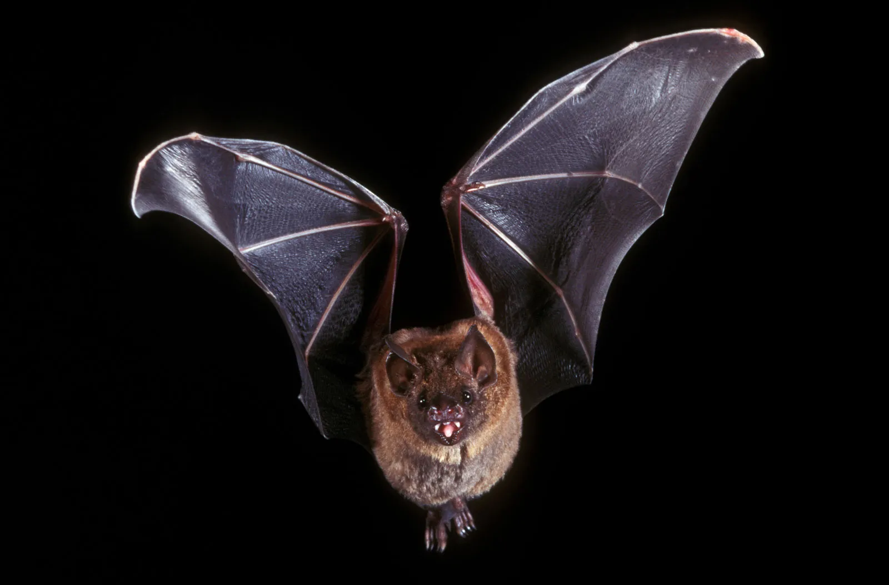

Tatiana Omolleh
GitHub: @tatiana-omolleh
Favorite Tech: Solutions Architecture

Animal Avatar: I chose a koala because it represents calmness, awareness, and quiet.
GitHub: @Nduati-R
Favorite Tech: JavaScript
Fun Fact: I love Football
GitHub: @tatiana-omolleh
Favorite Tech: Solutions Architecture
Animal Avatar: I chose a koala because it represents calmness, awareness, and quiet.
GitHub: @ShalomObongo
Favorite Tech: AI
Animal Avatar: I chose a bat because it symbolizes intuition and the ability to see things that others may miss.